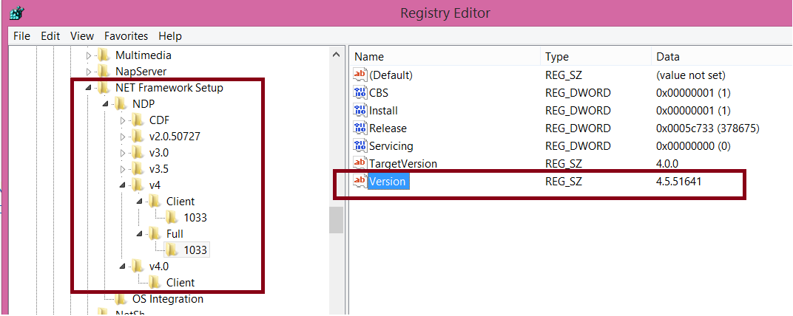
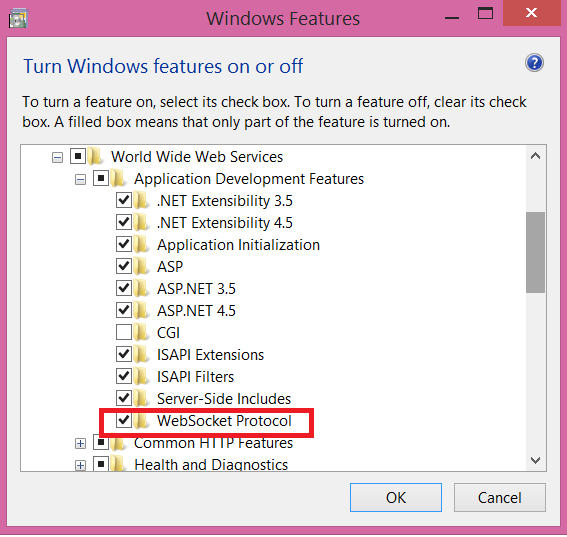

Both functionalities - Server.Socket external object, and Progress Indicator User Control - have the same requirements which are detailed below: Client Requirements
Web Server RequirementsJavaIn java, the implementation is based on JSR 356, Java API for WebSocket. Required:
.NetSoftware requirements:


Configuration requirements:
Troubleshooting:1. Verify File "CloudServices.config" is present in the Deployment. This File MUST exist. 2. Verify web.config: <httpRuntime requestValidationMode="2.0" targetFramework="4.5" /> //The Following Lines must NOT be present:
<compilation>
<assemblies>
<remove assembly="GXWebSocket" />
<remove assembly="Microsoft.WebSockets" />
</assemblies>
</compilation>
3. If you compile with framework 2.0, run on ASP.net 2.x, you may get this: FileLoadException: Could not load file or assembly 'log4net, Version=1.2.11.0, Culture=neutral, PublicKeyToken=669e0ddf0bb1aa2a' or one of its dependencies. The located assembly's manifest definition does not match the assembly reference. (Exception from HRESULT: 0x80131040) SuperSocket.SocketBase.Logging.Log4NetLogFactory..ctor(String log4netConfig) +0 Solution: Apply Requirements
4. If you haven't the Web Socket Protocol installed you see the following error (or similar) in the web console: Firefox can’t establish a connection to the server at ws://localhost/WebAppName/gxwebsocket.svc?6977921532b3f2ecd1022896025d931c6062249c.
5. If you have Tomcat connected with Apache, one possible solution to make the Web Notifications work is the following: Define these entries in the Apache configuration file:
Then enable the proxy_wstunnel module in Apache.
Limitations
|